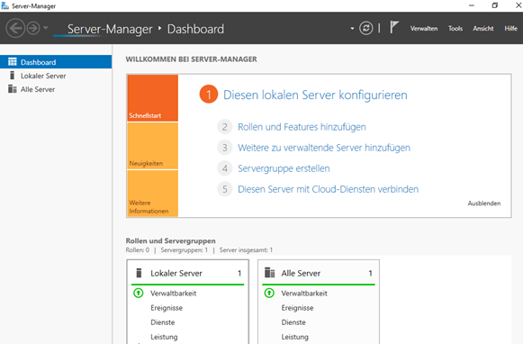
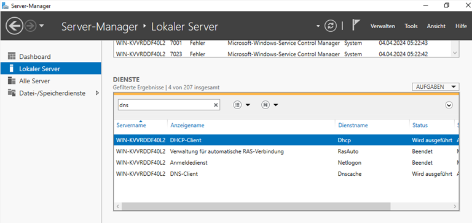

← Zurück zu NTMA
NTMA
4. Klasse
VirtualBox
Windows Server
Windows Server
Installation
Einrichtung eines Windows Servers in einer virtuellen Maschine — mit Konfiguration
des Server-Managers, DNS-Dienst und lokalen Servereinstellungen.
01 · Leitfaden
Lernsituation
Im NTMA-Unterricht richteten wir einen Windows Server in einer virtuellen Maschine
unter VirtualBox ein. Ziel war es, die grundlegende Serverkonfiguration
selbstständig durchzuführen und den Server-Manager kennenzulernen.
Dabei wurde der lokale Server konfiguriert, Rollen und Features geprüft sowie
Netzwerkdienste wie DHCP und DNS eingerichtet und überprüft. Die virtuelle Maschine
simuliert dabei eine realistische Serverumgebung, wie sie in Unternehmen eingesetzt wird.
02 · Leitfaden
Installationsschritte
Schritt 01
Virtuelle Maschine anlegen
Neue VM in VirtualBox erstellen, Arbeitsspeicher und Festplattenimage konfigurieren.
Schritt 02
Windows Server installieren
Windows Server ISO einbinden und Betriebssystem in der VM installieren.
Schritt 03
Server-Manager öffnen
Server-Manager Dashboard aufrufen, lokalen Server konfigurieren und Übersicht prüfen.
Schritt 04
Dienste konfigurieren
DNS- und DHCP-Dienste prüfen: Status, Dienstname und Anzeigename im lokalen Server einsehen.
03 · Leitfaden
Kompetenzen
- Virtualisierung: Einrichten und Betreiben einer VM mit VirtualBox
- Serverbetriebssystem: Grundlegende Navigation im Windows Server Manager
- Netzwerkdienste: DHCP und DNS konfigurieren und deren Status prüfen
- Serverrollen: Übersicht über Rollen, Servergruppen und Ereignisse
- Fehlerbehebung: Ereignisprotokoll lesen und Dienststatus interpretieren
04 · Leitfaden
Ergebnis
Der Windows Server wurde erfolgreich in VirtualBox eingerichtet. Der Server-Manager
zeigt das Dashboard mit einem lokalen Server sowie die konfigurierten Netzwerkdienste.
Im Dienste-Filter sind DHCP-Client und DNS-Client aktiv, Netlogon und RasAuto beendet.

Server-Manager · Dashboard

Lokaler Server · DNS-Dienste